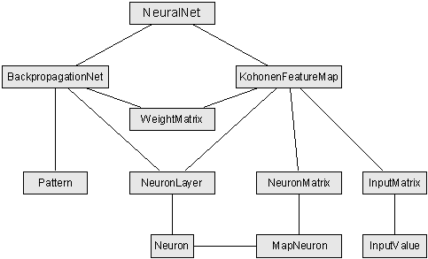

What is Object Orientation?
What is Object Orientation?
| What is Object Orientation? |
bottom of page | Neural net classes |
The classes and their relationships
Due to the fact that most of the existing neural net types have some common components, I thought it would
be nice, if I had to implement those components once and may use them later in different
applications, like some sort of a construction kit.
I decided to write classes suitable for the Backpropagation Net and the Kohonen Feature Map, because
(in my honest opinion) these are the most powerful types of neural networks.
And here is the result of my work:
(You should always keep in mind that this was my first object oriented piece of software, so don't blame me!)

This is not to be read as a class hierarchy, as explained in the previous section.
The levels do not represent levels of abstraction.
The figure only shows, which classes are present and what classes have relationships among each other.
Furthermore, it shall demonstrate my primary goal: The integration of common components.
As you can see, for example, the WeightMatrix class and the NeuronLayer class are commonly used by the two net classes
(BackpropagationNet and KohonenFeatureMap) although their structure differs in both net types.
Object Orientation rules!
The following sections explain the classes in greater detail.
| What is Object Orientation? |
top of page | Neural net classes |
| navigation |
|
[main page]
[content]
[neural net overview] [class structure] [using the classes] [sample applet] [glossary] [literature] [about the author] [what do you think ?] |
Last modified:
Copyright © 1996-97 Jochen Fröhlich. All rights reserved.